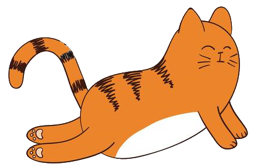
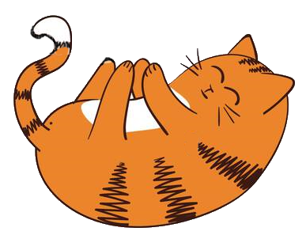
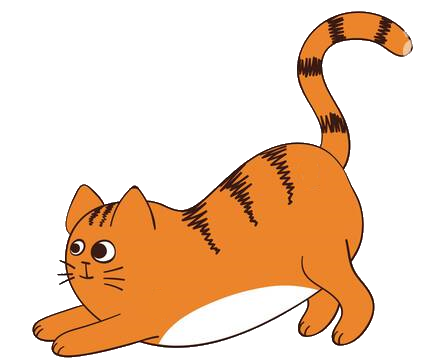
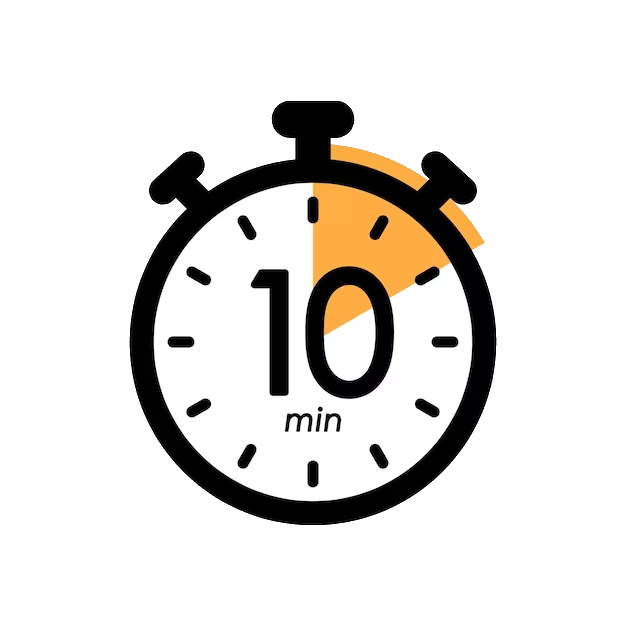

Щоб ранок став краще :)

Не поспішай підстрибувати на ліжку, почувши будильник. Спочатку добре потягнись, підніми руки над головою, пальцями рук тягнись вгору, одночасно випрямляючи ноги й тягнучи носочки. Тепер по черзі притискай коліна до грудей, залишаючи другу ногу випрямленою.

Тепер зігни праву ногу, поверни праве коліно вліво і торкнися ним ліжка, а голову розверни у протилежний бік. Порахуй до чотирьох, не забувай дихати. Згинай ліву ногу і роби теж саме.
Тепер підніми ноги під прямим кутом і починай тягнути носочки по черзі на себе та від себе. А тепер підніми і руки і добряче потруси руками-ногами. А зараз саме час впустити трохи свіжого повітря в кімнату. Тепер твоє тіло точно прокинулось.
Розминки впродовж дня
